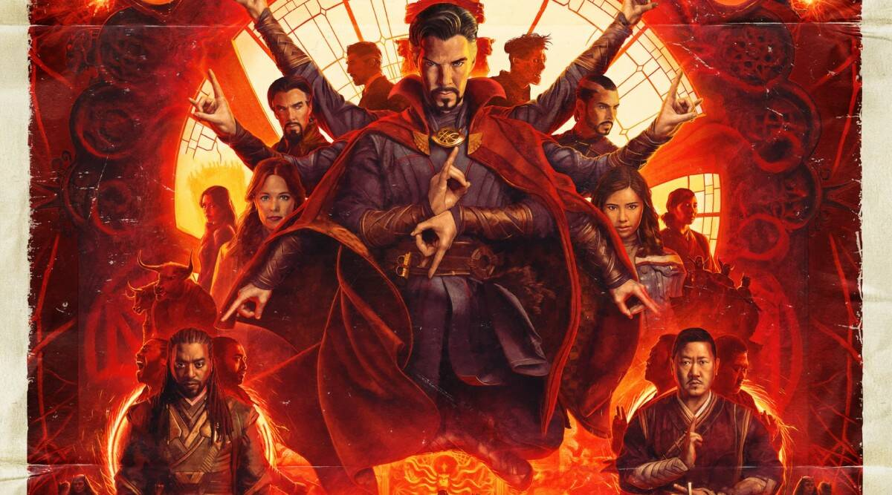
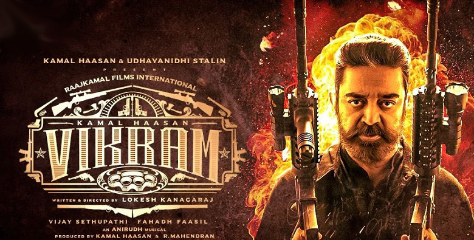

Doctor Strange in the Multiverse of Madness
2022 . PG-13 . 2h 6m
Plot
Doctor Strange teams up with a mysterious teenage girl from his dreams who can travel across multiverses, to battle multiple threats, including other-universe versions of himself, which threaten to wipe out millions across the multiverse. They seek help from Wanda the Scarlet Witch, Wong and others.
Reviews
Well, it was shiny and colourful
User Name: user12345
Rating : 5/10
So, carrying on from WandaVision, Wanda continues her arc as a slaver who faces no consequences for enslaving a town full of people to now being a mass-murdering slaver who risks the lives of trillions of people's lives, destroys universes, enslaves more people, so she can murder a child, which will help her switch her plan to murder a mother and kidnap her imaginary children.
And her redemption arc is she notices she is a monster and ends her reign of terror in the last 2 minutes.
And we're meant to sympathise with her for those heinous acts because she is sad because she had to stop imagining her children, and had to stop all the slaving and torture she was doing in order to imagine some fake imaginary children.
It was loud and shiny and stupid, so it was fine as totally brainless, lightweight nonsense... Pretty meh overall, and I stopped paying attention during some parts as I was thinking about other things because it was not engaging at all.
Not enough multiverse and maybe too much madness
User Name: rainbow789
Rating : 6/10
Sam Raimi definitely put a splash of horror in this action film. Doctor Strange in the Multiverse of Madness is darker & more violent than any previous MCU movie, which could be considered a strength. However, I felt like there was not enough multiverse and maybe too much madness. Despite the entertaining visuals, the plot is fairly chaotic, and the acting & dialogue are inconsistent. This movie is an entertaining ride, but it's a little too messy to stand on its own.
Vikram
2022 . 2h 55m
Plot
Amar is assigned to investigate a case of serial killings. When Amar investigates the case, he realizes it is not what it seems to be and following down this path will lead to nothing but war between everyone involved.
Reviews
A 100% LOKESH MOVIE!
User Name : vineet_mishra
Rating : 10/10
This film will not disappoint you. What a comeback from Kamal.
It's a sequel from 2019 Kaithi, every character was detailed properly.
It's definitely not like Master! It's a Marana Lokesh padam.
Vera level work by ANIRUDH!
Family audience should realise this is the new commercial entertainer.
The type of emotional mass masala movies should be dead! It's 2022 not 2005!
Overall: a treat for cinema fans! 9/10
This is the pride of Tamil cinema after multiple failures by big actors! (Not gonna mention who)
Once upon a time, there lived a ghost!
User Name : msunando
Rating : 9/10
Call it a magnum opus, or larger than life, but Vikram has been worth the wait. A Kamal Haasan film always brings innovation with it, and Vikram aces it in action. Mounted on superlative production values and a breathtaking pace, Vikram doesn't have one dull moment in its 146 minutes of running time
The film starts with a series of murders, including that of Karan (Kamal Haasan) perpetrated by a team of vigilantes that claims to be cleaning up the system by waging a war against the system. Two of the three people murdered were policemen who had captured a large consignment of drugs and hidden the same in an unknown place, and Karan was the foster father of one of them. This is just the beginning. The Chennai Police Commissioner calls upon a crack team of sleuths led by Amar (Fahadh Faasil) to trace down the culprits as they are the best in the business. Amar and team go about systematically and conclude the case with a warning to the Commissioner himself - that Amar knew who murdered one of the two policemen, and that Vikram, the original leader of the Black Squad from the 1980s, taken for dead, is back to life and out on a mission to rid the nation of the drug menace.
Vikram (Kamal Haasan) is in reality an undercover agent leading a team of vigilantes, cleaning up drug mercenaries knowing very well that their current crop of antagonists headed by a local drug lord Chandhan (Vijay Sethupati) are just small fish that must be dealt with. The real big fish Rolex is who their ultimate aim is.
Vikram, helmed by Lokesh Kanagaraj is visually spectacular. A taut action adventure, it extracts Kamal Haasan to his fullest potential, but doesn't showcase him in every frame to make sufficient space for Fahadh Faasil and Vijay Sethupati too. In fact, the three men are the core of Vikram, in very different roles that make the movie immensely watchable with a mix of myriad emotions and action at its best. The climax is violent, with the use of an arsenal of firearms and hand to hand combat, setting up a finger licking wait for the potential sequel where Vikram will lock horns with Rolex (Suriya, playing a surprise cameo). Don't wait for Vikram to drop into OTT platforms, for a film like this must only be watched in the theatres.
RRR
2022 . 3h 7m

Plot
In 1920, when the British government ruled over India, tyrannical governor Scott Buxton and his sadistic wife Catherine visit a forest in Adilabad and forcefully take away Malli, a young girl with a gift for singing, from the Gond tribe. The tribe's protector Komaram Bheem heads off to Delhi in search of the missing girl..
Reviews
Finally, the most awaited movie was released
User Name: user145
Rating : 9/10
I watched RRR (Rise, Roar, Revolt)movie made with a budget of 500 crores. It's a visual treat. S S Rajamoulis another gem of a movie after Bahubali. It is a fictional story about two Indian revolutionaries, Alluri Sitarama Raju (Charan) and Komaram Bheem (jnr NTR ), who fought against the British Raj
Aull action-packed movie.Action sequences are the best directed by renowned Hollywood action director Nick Powell.. Cinematography by K senthil kumar was mind-blowing. BGM by M M keeravani was good .
Jnr NTR also supported well, and both have got equal importance in the movie. Alia Bhatt, Ajay Devgan , and samuthirakani all supported well and gave full justice to their characters played. Even the English actors were brilliant.
RRR. Master piece from Master Story Teller
User Name: user9
Rating : 10/10
This is one of the greatest movies in Film History. I only give 5/5 stars for exceptional acting, editing, effects, and CGI. I really enjoyed the movie and I really appreciate DVV entertainments for producing this movie along with crew, Ram Charan, NTR Jr., Ajay Devgan, Alia Bhatt, Olivia Morris, and Ray Steven. Ram Charan played Alluri Seeta Rama Raju very well and I really enjoyed how they creatively made a story on how he revolted against the Tyrannical British. I really loved NTR as Bheem and how they incorporated lots of historical facts about how he was part of the Gond Tribe and part of the Komura Clan which was well incorporated. I also loved the contrast between him being a revolutionary and a tribal and that made his character come alive
HRIDAYAM
2022 . 2h 51m

Plot
Arun Neelakandan, a teenager from Kerala, joins KC Tech, a popular engineering college in Chennai for his graduation. He falls in love with college sweetheart Darshana at the first sight. They grow closer after Arun is ragged by his seniors, but a few scuffles and incidents get the seniors suspended and they start dating. Arun accompanies his friend Antony to meet his online girlfriend, and feels attracted to her colleague. He lies to her, states he is single and they lean in for a kiss but they are interrupted by moral police. A guilt-ridden Arun confesses to Darshana, who lividly calls off the relationship. In the heat of their argument, they challenge each other that they will have other romantic partners better than each other.
Reviews
Hridayam translates as “Heart”
User Name: user1
Rating : 9/10
Though it’s a simple title but sometimes they say Simple is more powerful, I guess that’s what has worked for this magical masterpiece on screen.
This is a romantic coming of age story of Arun Neelakandan (beautifully essayed by Pranav Mohanlal) and how his life transpires through various People he meets, incidents that happened in his life and off course his love interest shape him as a person. Ok I know it’s a regular coming of age story we have seen in so many movies of similar genre, that’s easy and said but Director Vineeth Sreenivasan makes sure he delivers his mark in this soulful tale that unfolds on big screen leaves all your emotions turned. This close to 3 hours long movie might sound like a long affair to sit and watch but a quirky and engaging screenplay makes sure mostly you don’t get that thought.
Performances – All three leads deliver what’s exactly needed for the role they look naturally the character which is a testimony to their craft. Pranav Mohanlal as Arun emoted almost every node of the emotional graph and gave his character life. Darshana Rajendran plays Darshana a beautiful curly haired girl next door seemed effortless in her role delivers strong with her subtle emotions..
Heart touching !
User Name: user008
Rating : 8.5/10
Vineeth Sreenivasan is a celebrated musician, screenwriter and actor but I firmly believe that his true craft comes through in his vivid, imaginative and soul-stirring direction, lending heart and joy to even the most cliché and commonplace narratives. Hridayam is not a new story by any stretch of the imagination but the deft hand of Malayalam’s most beloved director in the nostalgic romance genre weaves his magic wand to create a canvas that instantly builds a connection with audiences and reels you in as the story moves alo